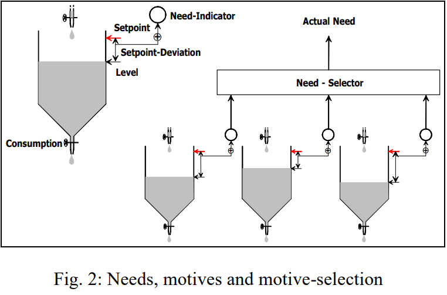

Descriptive and Prescriptive Reasoning Principles from Humans To Machines
Timotheus Kampik & Maarten Jensen
Since centuries, researchers study human reasoning and decision-making
Descriptive: how do humans make decisions?
Economic rationality- Bounded rationality (Simon, Tversky & Kahnemann)
- Reasoning backwards (Haidt)
- “Water tank” (Dörner)
- Social practices, habits, ‘social’ imitation
- ...
#### Prescriptive: how should humans make decisions?
* Economic rationality: clear and consistent preferences (e.g., Rubinstein)
* Legal reasoning: burden of persuasion (e.g., Prakken and Sartor)
* Religious and ethical norms: Shev Shema'tata (e.g., Gabbay)
* ...
Kampik & Gabbay. *Explainable Reasoning in Face of Contradictions: From Humans to Machines*.
#### How does this relate to our research?
* Maarten's aim is to design agents that behave like humans actually behave
* Tim's aim is to design agents that behave like humans should ideally behave
→ There should be an intersection, right?
Social Simulation: Why Social Rules
What is social simulation? It is like the Sims
Why social rules?
https://www.ign.com/wikis/the-sims-4/Interface
https://www.reddit.com/r/SimCity/comments/2quzcl/simcity_buildit_cities/
Bounded Rationality

- Starting point: economic rationality (clear and consistent preferences)
- Account for limited knowledge, processing time, ...
- Economists try to adjusts their models accordingly.
Kahneman, Daniel. *Maps of bounded rationality.*
Rubinstein, Ariel. *Modeling bounded rationality.*
Carley & Newell. *The nature of the social agent.*
Descriptive theories: Needs/motivation/values

- Value based preference
- $Power \preceq Friends$
- Static preferences
- Water tank needs/values (sims)
- Dynamic system
- Actions fill water tanks
Dörner *et al*. *A simulation of
cognitive and emotional effects of overcrowding.*
#### Social practices, habits, ‘social’ imitation
* Social practices:
* Social activities with preset
* Habits:
* Repetition of behavior
* Not necessarily rational
* ‘Social’ imitation
* Imitate others
"Reasoning Backwards"

- We also know that humans "reason backwards".
- We commit to a decision intuitively.
- We make up a line of reasoning if necessary.
Haidt, Jonathan. *The emotional dog and its rational tail: a social intuitionist approach to moral judgment.*
How should humans reason?
#### Abstract Argumentation I
Dung, Phan Minh. *On the acceptability of arguments and its fundamental role in nonmonotonic reasoning, logic programming and n-person games.*
Abstract Argumentation II
Dung, Phan Minh. *On the acceptability of arguments and its fundamental role in nonmonotonic reasoning, logic programming and n-person games.*
#### Economic Rationality & Abstract Argumentation
* $AF = (AR, AT)$; arguments $AR$, e.g.: $\\{a, b, c\\}$, attacks $AT$, e.g.: $\\{(a, b), (b, c)\\}$
* Semantics $\sigma(AF)$ returns set of extensions $ES \subseteq 2^{AR}$
* Extension $E \in ES, E \subseteq AR$ **implies** preferences: $\forall S \in AR, E \succeq S$
* Consistent preferences when **normally expanding** $AF$ (Economics' *ceteris paribus* assumption)
Dung, Phan Minh. *On the acceptability of arguments and its fundamental role in nonmonotonic reasoning, logic programming and n-person games.*
#### Normal Expansion
* Given $AF = (AR, AT), AF' = (AR', AT')$ AF' normally expands AF iff:
* $AR \subseteq AR', AT \subseteq AT'$
* $(AT' \setminus AT) \cap (AR \times AR) = \\{\\}$
* Only add arguments and attacks, don't change attacks between existing arguments
* Denoted by $AF \preceq_N AF'$ (Baumann, Brewka)
Baumann & Brewka. *Expanding Argumentation Frameworks: Enforcing and Monotonicity Results.*
#### Reference Independence Principles
* Given semantics $\sigma$, $AF = (AR, AT), AF' = (AR', AT'), AF \preceq_N AF'$
* **Strong**: no matter what conclusion/extension we select from $AF$ and $AF'$,
the implied preferences are consistent
* **Weak**: no matter what conclusion/extension we select from $AF$,
we can infer a conclusion from $AF'$ that implies consistent preferences
Kampik & Nieves. *Abstract Argumentation and the Rational Man.*
#### Strong Reference Independence Is Unrealistic To Obtain
#### Example III - Weak Reference Independence
* Decision: recommend launch of product $p_a$: yes or no?
* *Launch* denoted by argument $a$
* At first, we find no reason not to launch
→ recommend $a$
#### Example III
Our boss asks us to collect more stakeholder opinions (arguments)
Example III
- If all newly added arguments are not valid conclusions, $a$ should remain a valid conclusion.
-
Because we make clear decisions we consider arguments either valid conclusions or not (no undecided arguments)
-
Which semantics allow us to be economically rational in this scenario?
Semantics Families
| Family |
Admissibility-Based |
Weak Admissibility-Based |
Naive-Based |
| Satisfied by any established semantics$^*$ |
No |
No |
Yes |
| Satisfied by |
- |
- |
Naive, CF2, presumably SCF2 and nsa(CF2) |
$^*$ Could potentially be satisfied by a semantics that always returns the empty set and hence is in all families.
#### Further Results
* Preference-based and value-based argumentation do not ensure economic rationality
* Monotony implies reference independence, but reference independence is not the same as cautious monotony or rational monotony
* We present a dialogue reasoner that can enforce reference independence as well as cautious monotony
$^*$ Some tweaks are necessary to "port" this principle to abstract argumentation
Kampik & Nieves. *Abstract Argumentation and the Rational Man.*
Kampik & Gabbay. *Towards DiArg - An Argumentation-based Dialog Reasoner.*
#### Joint Perspective: Meta-Reasoning
Maarten’s meta-reasoner should presumably satisfy principles of prescriptive “intelligent” human reasoning
* Can we build an argumentation-based meta-reasoner that satisfies these principles?
* Argumentation-based meta-reasoner or "something simple"?
* Can we “learn” meta-reasoning and put principle-based constraints on it?
#### Example: Post-traumatic stress disorder
* Apply consistency principles
* Meta reasoner: when to reason, when to act intuitively?
* Should be applied "consistently", but can evolve:
* Trauma, PSD therapy
#### Joint Perspective: Rule Conflicts
* Prescriptive vs. descriptive rules?
* In modern society, prescriptive rules govern our lives
* Human behavior not fully aligned with these rules
(instead: influenced by them)
* Can we build (formal) cognitive models of to manage conflicts between:
* Prescriptive rules and principles
* Practical needs and constraints?
#### Example: Post-traumatic stress disorder
* Apply consistency principles
* Meta reasoner: when to reason, when to act intuitively?
* Should be applied "consistently", but can evolve:
* Trauma, PSD therapy
Questions?
How does this relate to your research?
Special Issue in the Journal of Applied Logics - IfCoLog Journal:
*Explainable Reasoning in Face of Contradictions: Cross-disciplinary Perspectives*